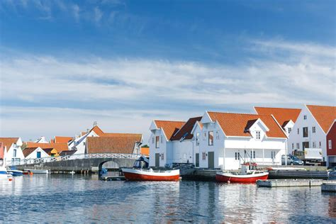

| Norvège - Skudeneshavn- |
 |
Le petit village de pêcheurs de Skudeneshavn est
situé sur la pointe sud de l'île Karmøy. Les minuscules
maisons de la vieille ville sont blotties contre le rocher
qui descend en pente douce vers le port. Ce village a été
couronné village estival de Norvège 2004.
|
| Espagne - Valladolid- |
|
Valladolid est une commune et une ville du Nord-Ouest de
l'Espagne, capitale de la province de Valladolid et de la
communauté autonome de Castille-et-León. Elle est située à
la confluence du Pisuerga et de l'Esgueva. Elle compte une
population de 302 884 habitants en 2017, les Vallisolétans
|
| Japon - Tokyo- |
|
Avec ses gratte-ciel futuristes, sa scène gastronomique
inégalée et sa vie nocturne endiablée, Tokyo suscite une
véritable poussée d’adrénaline. Cette vaste ville aux multiples
facettes est réputée pour être à la pointe du progrès, mais ses
anciens temples bouddhistes, ses salons de thé d’époque et ses
jardins paisibles offrent une évasion sereine et un rappel
émouvant de la longue histoire de la ville.
|